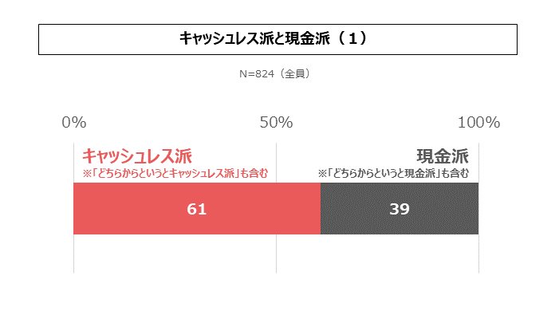
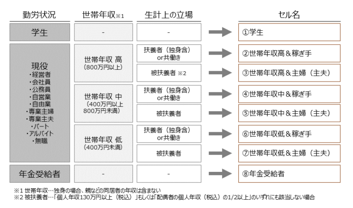
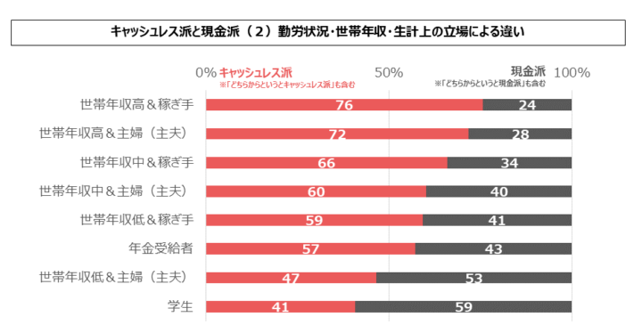
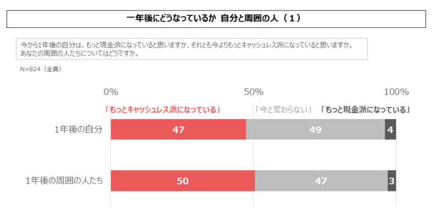
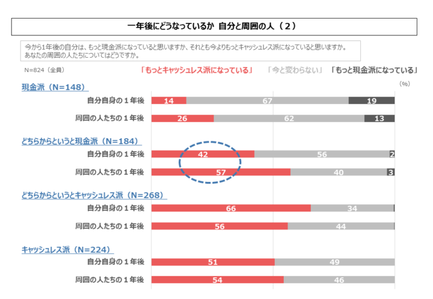
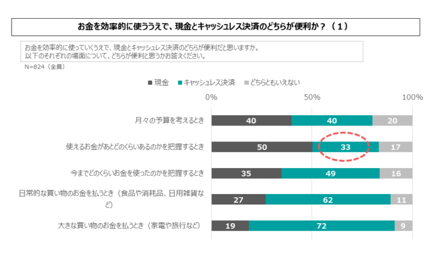
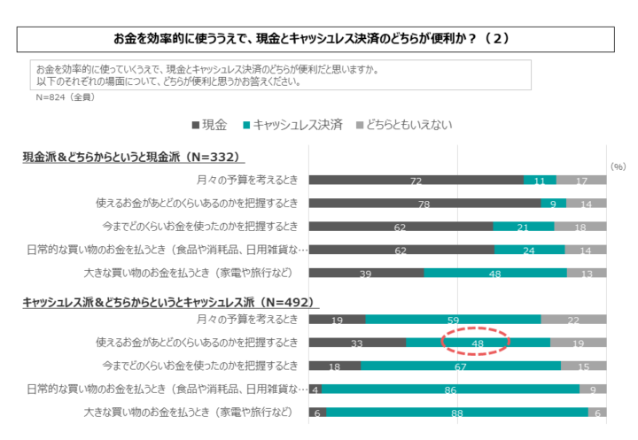

もしすべての人を「現金派」と「キャッシュレス派」に分けるとしたら、読者自身はどちらに属すると思いますか？
「決済動向2023年上期調査」にて、その質問を824人の回答者に対して行った結果がこちらです。

図1 キャッシュレス派と現金派（１）
「キャッシュレス派」を自認している人は全体の61%に及んでいます。なお、前回調査では若干異なる表現で類似の質問をしていましたが、そちらでもキャッシュレス派の割合は61%でした。日本の消費者のキャッシュレス化は着実に進行しています。
今回は、日本の消費者の多数を占めるキャッシュレス派の世界観を、現金派のそれと対比しながら明らかにしていきたいと思います。
勤労状況・世帯年収・生計上の立場
まず、ある人がキャッシュレス派になるかどうかは、その人の暮らしぶりに影響を受けるのでしょうか。結論としては「大いに影響を受ける」ということがわかっています。
「決済動向調査」の詳細調査におけるセル定義を図2に示します。わたしたちは、決済のスタイルはライフスタイルに大きく依存すると考えています。既存の調査データはそこが不十分と考えたことが、わたしたちが「決済動向調査」を始めた動機の一つでした。

図2 詳細調査におけるセル定義
まず日本の消費者を勤労状況によって「学生」「現役」「年金受給者」に三分類します。そして「現役」を世帯年収によって三分類します。最後に、生計上の立場によって「稼ぎ手」と「主婦（主夫）」に分類します。こうにして八つのセルを定義し、それぞれ103人ずつをサンプルとして実施しているのが「決済動向調査」の詳細調査です。
図3に、セルごとのキャッシュレス派と現金派の割合を、キャッシュレス派の多い順に並べて示します。最もキャッシュレス派が多いのは「世帯年収高＆稼ぎ手」、最も少ないのは「学生」でした。

図3 キャッシュレス派と現金派（２）勤労状況・世帯年収・生計上の立場による違い
そしてキャッシュレス派の割合にはきれいなパターンが表れています。まず、世帯年収が高いほどキャッシュレス派の占める割合が大きくなっています。そして、同じ世帯年収レンジであれば、稼ぎ手のほうがキャッシュレス派が多くなっています。
世帯年収との相関の背景には、金融リテラシーの影響があると思われます。年収と金融リテラシーが相関し、金融リテラシーとキャッシュレス決済利用が相関する、と考えられるのです。
「学生」には若年者が多く含まれていますが、若年者はクレジットカード利用がまだ少ない傾向があります。そんなことから、「学生」はキャッシュレス派が少ないと考えられます。
一般消費者も、さらなるキャッシュレス化を予見
それでは一般消費者は「日本のキャッシュレス化は更に進行する」と考えているのでしょうか。
今回の調査では「今から1年後の自分はもっと現金派になっていると思うか、それとも今よりもっとキャッシュレス派になっていると思うか。あなたの周囲の人たちについてはどうか」と問いかけ、回答を採集しました。その結果が図4です。

図4 一年後にどうなっているか 自分と周囲の人（１）
約半数が「もっとキャッシュレス派になっている」と回答し、同じく約半数が「今と変わらない」と回答ています。興味深いことに、「もっと現金派になっている」との回答は、自分については4%、周囲の人については3%しかいませんでした。
日本人の多くは、キャッシュレス決済を今と同等かそれ以上に利用していくと予想しています。それ自体は妥当に思えますが、回答者の約4割は現金派を自認する人々なのです（図1）。ということは、現金派回答者ですら、「もっと現金派になっている」とは思っていないことになります。日本社会において現金派が増えるというのは、もはやありえないことだといえるでしょう。
現金派ですら日本のキャッシュレス化の進行を予見しているように見えるこの結果を、より深堀りしてみたものが図5です。図4と同じデータを、現金派」148人、どちらかというと現金派184人、どちらかというとキャッシュレス派268人、キャッシュレス派224人に細分化して示しています。

図5 一年後にどうなっているか 自分と周囲の人（２）
まず、現金派の19%が、「自分は1年後はもっと現金派になっている」と回答しました。さすが現金派、ともいえますが、同じ現金派のうち14%は「もっとキャッシュレス派になっている」と回答しています。現金派であっても、自分が少しずつキャッシュレス派になっていくと考える人が一定規模で存在しています。
最も興味深いのが、どちらかというと現金派の回答者たちで、「１年後はもっとキャッシュレス派になっている」との回答が4割を超えています。この層の消費者はより明確に、自分たちがキャッシュレス派になっていくことを予見していることがわかります。こうした人々をスムースにキャッシュレス派に転換していくためには、ポイント等のお得感の演出もさることながら、よりよい決済体験や購買体験の創出、そしてお金の管理における利便性が重要となっていくと思われます。
現時点ですでにキャッシュレス派を自認する層においては、現金への後戻りを予見する人はいないか、いても極めて少数です。さらなるキャッシュレス化への意欲も高くなっています。日本のキャッシュレス化は不可逆に進行していると言えます。
家計管理には不便なキャッシュレス決済
更なるキャッシュレス化を推進するためには、ユーザーがキャッシュレス決済のどこに利便性を感じているか、そしてどこに不便さを感じているかを理解する必要があります。
そのような問題意識から、今回の調査では「お金を効率的に使う上で、現金とキャッシュレス決済のどちらが便利か？」という問いかけを行ってみました。
予算管理に関する三つのユースケース、決済に関する二つのユースケースを提示し、それぞれについて現金とキャッシュレスのどちらが便利かを聴取した結果が図6です。大変示唆に富む結果が得られています。

図6 お金を効率的に使ううえで、現金とキャッシュレス決済のどちらが便利か？（１）
まず「日常的な買い物のお金を払うとき」「大きな買い物のお金を払うとき」という決済系のユースケースでは、多くの人が「キャッシュレス決済のほうが便利」と回答しました。決済利便性については広く認知されていると言えます。
しかし予算管理系のユースケースでは、現金のほうが便利との回答が増えてきます。「月々の予算を考えるとき」では現金・キャッシュレス決済とも40%で拮抗していますが、「使えるお金がどのくらいあるのかを把握するとき」では現金が50%に対してキャッシュレス決済は33%となっています。
キャッシュレス決済は、「これを買ってもいいのか？」「いくらまで使っていいのか？」を考える上では不便だと思われているのです。
「今までどのくらいお金を使ったのかを把握するとき」では現金35%に対してキャッシュレス決済49%となりました。履歴が電子データとして残るキャッシュレス決済の特長が認知されているようです。
ここで気になるのは、やはり「使えるお金の把握」です。回答者の61%はキャッシュレス派を自認する人々であるのにも関わらず、ここでキャッシュレス決済を選んだのは33%。ということは、キャッシュレス派のなかにも、使えるお金の把握はキャッシュレス決済では不便と考える人が一定規模で存在していることになります。
現金派とキャッシュレス派それぞれの考え方を知るため、同じデータを細分化したものが図7です。現金派は、さまざまな局面で現金のほうが便利と答えることが多いですが、大きな買い物ではさすがにキャッシュレス決済の利便性を認める人が多いことが分かります。

図7 お金を効率的に使ううえで、現金とキャッシュレス決済のどちらが便利か？（２）
キャッシュレス派は、決済利便性については圧倒的にキャッシュレス決済を支持していますが、予算管理系ユースケースではキャッシュレス決済支持が揺らいでいます。そして「使えるお金の把握」ではキャッシュレス決済を選ぶ人は48%しかいません。キャッシュレス派から見ても、このユースケースはキャッシュレス決済の弱点ということがわかります。
キャッシュレス決済事業者はどうしても、ユーザーの決済利用を促す方向で物事を考えがちです。例えば利用限度額や残高をあまり意識しないで決済利用してほしい、という感覚です。それ自体は分からないでもないですが、これはユーザーには受け入れがたい態度です。
ユーザーはお金を日々管理しながら生活しています。ケチケチした生活をしたいわけでなくとも、使い過ぎは回避したいと思うのが普通です。効率的にお金を使っていくために必要なものは、計画性です。「今、自分はどのくらい支出していいのか？」それを考えるサポートが欲しいのに、キャッシュレス決済サービスは基本的にそこを一切ケアしてくれません。「一定の資金を温存しつつ、余剰な資金を決済利用したい」と思っても、そうしたサポートは基本的にありません。
すでにキャッシュレス派となっている人々は、そうした機能が不足している事実を受け入れて利用しているが、それでもこの点に不満を感じています。これからキャッシュレス派になろうという人々にとっては、これは大きな阻害要因となっています。
支払うと決めたユーザーの支払い行為を遂行すること。従来のキャッシュレス決済はここに特化してサービスを高度化させてきました。支払いをしてもいいのかどうか、どのくらいの規模の支払いをしても大丈夫なのか、ユーザーが気にするのはこうした点ですが、それはすべてユーザー任せになっています。
予算管理機能を充実させることでユーザー獲得に成功した例としては初期の英Monzoや英Starling Bankなどの事例があります。予算管理サポートは、お金をうまく管理したい多くの消費者にとって大きな訴求点となり得るのです。


{kind=link}
{kind=link}
{kind=link}
{kind=link}
{kind=link}
{kind=link}
{kind=link}